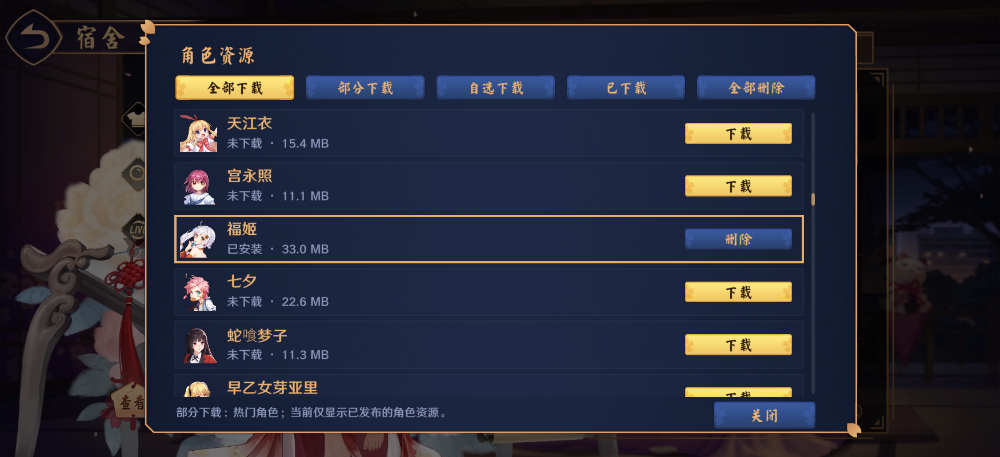
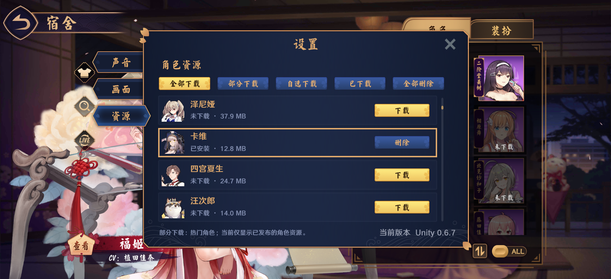

云间日麻 Unity 0.6.7 · 全角色资源
当前目录122名角色、486套服饰、69套动态；以下为实际Unity运行截图和逐动态服饰的渲染联系表。两名基础角色始终内置，其他角色按需下载。测试使用隔离存储，不修改玩家个人安装状态。Android真机触摸、声音和多手机热点仍待实测。
全部角色排序：末页全部角色排序：顶部全部角色安装完成
独立资源窗口：滚动条与描边间距
设置资源页：完整四行与定位描边动态服饰运行时渲染 1–24动态服饰运行时渲染 25–48动态服饰运行时渲染 49–69